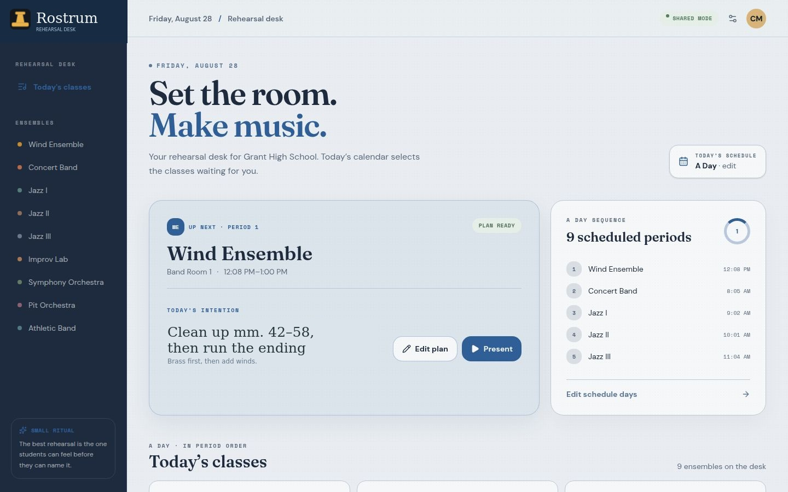
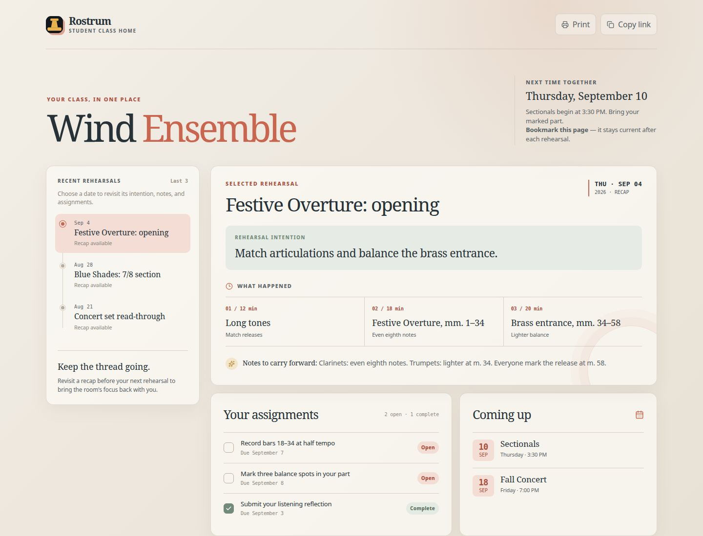

Private lessons and clinicsfor woodwinds, brass, and programs.
I'm Chris McCurdy, Band Director at Grant High School in Portland. I teach private lessons, run clinics for other band and jazz programs, and build a couple of practice apps on the side.
About
01 — BioChris McCurdy is in his sixth year as Band Director at Grant High School in Portland, Oregon, where he teaches concert band, jazz ensemble, and a non-audition jazz improvisation lab, in addition to seasonal symphony, pit, and athletic bands. He previously spent four years teaching at Lakeridge High School and Lakeridge Middle School in Lake Oswego, Oregon.
A saxophonist, Mr. McCurdy has performed with big bands and funk ensembles around Portland. Private lessons and clinics allow him to work with individual students in greater depth than a typical class period permits.
- Position
- Band & Jazz Director, Grant High School — Portland, OR
- Teaching Areas
- Concert Band · Jazz Ensemble · Improvisation Lab
- Presenter
- OMEA state conference 2023 ×2, 2025 · PPS teacher inservice 2026 · HS jazz concert hour 2023, 2025
- State Titles
- Oregon State Jazz Champions — Grant 2022, 2024, 2025, 2026 · Lakeridge 2019
Private Lessons
02 — Instruction- Instruments
- All instruments through intermediate · sax through advanced
- Sessions
- 30 or 60 minutes
- Rate
- On request — just ask
- Format
- In-person, virtual, or house calls around Portland
- Levels
- All ages welcome
Fundamentals
For students building the fundamentals — tone, rhythm, sight-reading, and the practice habits that make everything else possible.
- 30 or 60 min sessions
- Weekly or biweekly
- All band & orchestra instruments
Jazz & Improvisation
For students ready to apply scales and changes to real tunes — transcription-based, with combo and big band styling worked in.
- Transcription-based method
- Combo & big band styling
- All levels, saxophone specialty
Solo & Ensemble Prep
Focused, deadline-driven sessions for solo and ensemble contests, auditions, and festival performances.
- Etude & scale drilling
- Mock audition run-throughs
- Repertoire selection help
Clinics
03 — For ProgramsI've adjudicated jazz festivals throughout the Portland area, presented at the OMEA state conference, and am regularly brought in as a guest clinician — for band and orchestra programs as much as for jazz ensembles. Sessions usually run a half or full day, and I work out rate and travel individually depending on the program. A few topics I cover most often are below, and I'm glad to build a session around whatever your students need most.
Building a Jazz Program
The full session for directors — finding authentic charts, the four rules of swing style, rhythm section fundamentals, and programming a set that builds. This is the session I've given at OMEA and for Portland Public Schools.
Section Sound & Balance
A working sectional for band programs — tuning, blend, and articulation matched to your ensemble's actual repertoire.
All-Comers Jazz Workshop
A no-audition-required intro to jazz styling and improvisation, built for programs that want to grow their jazz enrollment.
Small Group Improv Intensive
Half-day or full-day combo coaching — trading, comping, and building a set list from scratch.
Festival & Contest Judging
Available as an adjudicator for jazz festivals and solo/ensemble contests throughout the region.
Apps
04 — Practice ToolsMusician's Toolkit
A metronome, drone, chromatic tuner, and phrase trainer, built into one simple app. I built it because my own students needed practice tools that stayed out of the way, without adding one more subscription to the pile.
One-time purchase, no subscription.

Rostrum
A rehearsal board for the band room that runs the period from a single screen, and hands a substitute a link that runs it for them.
Get in Touch
05 — ContactPrefer email? Reach out directly and I'll get back to you within a couple of days — sooner during the school year.
Musician's Toolkit
A metronome, drone, chromatic tuner, and phrase trainer in one app. I built it for my own students, who were opening four different apps to get through a practice session and paying a subscription for at least one of them.
The App
01 — Screens


What's In It
02 — ToolsKeeping time
30 to 240 BPM by slider or tap tempo, with a beat indicator and the meters a band student actually needs, 6/8 and 5/4 included.
Something to tune against
A sustained tone on any of the twelve pitches, in equal or just intonation. Just temperament is there because a section learns to lock in against a reference far faster than it does against a needle.
Checking pitch
A4 set to 440, 441, 442, or 432, with needle response you can slow down or speed up. Useful when a young player's tone is unsteady and a twitchy needle only makes it worse.
Taking a recording apart
Load an MP3, WAV, or M4A and work it between 25 and 200 percent speed without the pitch moving. Scrub the waveform to the phrase you want, set a loop, and stay there until it's yours.
Why I Built It
03 — BackgroundMost of what's in here already exists somewhere. A tuner is a tuner, and there are good ones. What my students didn't have was all four tools in one place, at a price a high school student could pay once and be done with.
So the app holds the four things they reach for in a practice room and nothing else: something to keep time, something to play against, something to check pitch, and a way to bring a recording down to a speed they can match. It's a one-time purchase, and nothing renews.
- Price
- $4.99 — one-time
- Platform
- iPhone & iPad · iOS 15.1 or later
- Includes
- Metronome · Drone · Chromatic Tuner · Phrase Trainer
- Subscription
- None
- Released
- September 2026
Support
04 — HelpIf something isn't working, or a tool you need isn't in there yet, email me. I'd much rather hear about a problem than have you delete the app over it, and I answer everything that comes in.
Teaching a program that wants the app in more students' hands? Get in touch about a bulk arrangement, or about a clinic that puts it to work in a rehearsal.
Rostrum
A rehearsal board for the band room. The order of the period, the timings, the warm-up, and what's coming up, all on one screen at the front of the room and editable from anywhere.
The Board
01 — Screens


On the Board
02 — PanesThe period, with a clock on it
Every item in the order gets a time beside it and a timer that actually runs. When you've given the march nine minutes, the board is the thing that holds you to nine minutes.
Up before they sit down
The do-now is on the screen when students walk in, so the first four minutes of the period aren't spent explaining what the first four minutes are.
The recording and the chart
The reference recording you want them to hear and the seating for the day, in the same place as everything else instead of three tabs away.
What's coming
The next concert, the next call time, the next thing that should be on their calendar, in front of them every day rather than announced once and forgotten.
The Sub Problem
03 — Why it existsEvery director has written the sub plan that ends with "have them play through the concert music." The problem was never that a substitute can't run a rehearsal. It's that the plan lives in a document and the rehearsal lives somewhere else, and the two only meet if the sub goes looking.
Rostrum hands the sub a link. They can start the timers and move the agenda along, and they can't change anything. The board is the plan, so the plan is what's running the room.
It also fits the schedule you actually have. My building runs rotating block days, so Rostrum works in day types and one-off schedules rather than assuming every Tuesday looks like the last one, and each class keeps its own panes.
- Status
- Early access — a small group of directors
- Built for
- Band directors, from a band room
- Sub access
- Read-only link — timers and agenda, no editing
- Schedules
- Rotating, block, and one-off day types
- Runs on
- Any browser — nothing to install
Early Access
04 — Try itI run Rostrum in my own band room every day, and I'm opening it to a small number of directors who want to run it in theirs. If that's you, tell me a little about your program and what your schedule looks like, and I'll get you set up.
You'll get a reply from me rather than a waitlist confirmation. I'd rather have a handful of directors using it hard and telling me what breaks than a long list of people waiting for a launch.
The long version.
Chris McCurdy is serving his sixth year as the Band Director at Grant High School in Portland, Oregon. At Grant, he teaches two levels of concert band, a jazz improvisation lab, and three levels of jazz ensemble. Seasonally, he directs the symphony orchestra, pit orchestra, and athletic bands. Prior to joining the staff at Grant, Mr. McCurdy taught for four years at Lakeridge High School and Lakeridge Middle School in Lake Oswego, Oregon.
A saxophonist, Chris has performed with a range of big bands and funk groups in Portland. He is a graduate of the University of Oregon, B.Mus, Music Education; M.Mus, Music Education, studying conducting with Dr. Rodney Dorsey and pedagogy with Dr. Eric Wiltshire. He was recently recognized as a member of the 2025 Yamaha "40 Under 40" list, celebrating excellence in music education.
In his free time, Chris can be found biking or camping around the Northwest with his dog Basie and eating his way through the Portland food scene with his partner Jacquelyn.
- Education
- B.Mus & M.Mus, Music Education — University of Oregon
- Studied With
- Dr. Rodney Dorsey (conducting) · Dr. Eric Wiltshire (pedagogy)
- Prior Post
- Lakeridge HS & MS — Lake Oswego, OR (4 yrs)
- Presenter
- OMEA state conference 2023 ×2, 2025 · PPS teacher inservice 2026 · HS jazz concert hour 2023, 2025
- State Titles
- Oregon State Jazz Champions — Grant 2022, 2024, 2025, 2026 · Lakeridge 2019
A few things I believe about teaching music.
I'd rather see them try and not get where they thought than not try at all.
Optimistic, sometimes to a fault
I believe students are capable of just about anything, and I know perfectly well that the optimism gets me into trouble now and then, which is a trade I have always been willing to make. One of my saxophonists struggled through his first two years before he found his footing with the horn in his hands, and by the time he graduated he was the strongest soloist in the program, though what impressed me about him was never the playing so much as his willingness to keep turning up to something he was not yet any good at. A private lesson is where that bet gets made every week, because we aim at something a little past where the student actually is and then agree in advance not to apologize for missing it the first several tries.
A door at any time
There should be a way into music for any student at any point, and in my program that means a set of classes that deliberately do not all run on the same expectations. The easiest door is the jazz lab, which begins with learning music entirely by ear, long before a page of notation or a word of theory ever shows up, and it asks a great deal of the students who walk through it without ever being out of reach for anyone who wants in. Private lessons work on the same principle, since I teach beginners and I teach students preparing for auditions, and I have never once considered the beginner to be the less serious job of the two.
Knock the walls down
My job is to knock down whatever wall is standing between a motivated, willing student and the music, and more often than not that wall turns out to be money, so we fundraise in order to send honor bands, festivals, and solo and ensemble out free of charge to the family.
Other times the wall is the room itself, which is why our jazz program for girls and gender minorities began as a day camp where middle schoolers learned from local female jazz professionals, and it has since grown into something that reaches across the whole jazz program, with a handful of those students now gigging around Portland as the combo JazzChangesPDX. The freshmen who turned up for it this fall were all the proof anyone needed that it was worth building in the first place.
Why the instrument does what it does
We spend real time on the physics of the thing, on tube length and what it has to do with the speed of sound, on the mouth as a ramp that sets how fast the air is traveling, and on what is actually happening when two sounds overlay one another, agree, or conflict, and how all of that becomes harmony. This is one of the places where a lesson can do what a rehearsal cannot, because sitting one to one I can usually find the exact thing a student has misunderstood about their own instrument, and sorting out that misunderstanding tends to solve a good deal more than the problem we sat down to work on.
The first look is inward
When the work is not getting done, everyone in the room already knows it, so the first question I ask is not whose fault it is but whether I gave them enough time and enough scaffolding to do it, and only once I am satisfied on that count do we go looking for whatever the real block is for that particular student. Accountability has to mean two things at the same time, that the work gets finished and that the room stays a place where a student can fail at something and still belong to the group. In a weekly lesson that matters more rather than less, because there is nowhere to hide in a room with two people in it, and a student has to be able to walk in having had a bad week and say so.
What they keep
Most students stop playing at some point, and there is nothing wrong with that. What I hope they still have ten years later is the grit, the ability to hit a deadline, the habit of thinking about their own part in the context of everything going on around it, a kind and team-first way of working with other people, and the memory of having been part of something that got really, really good.